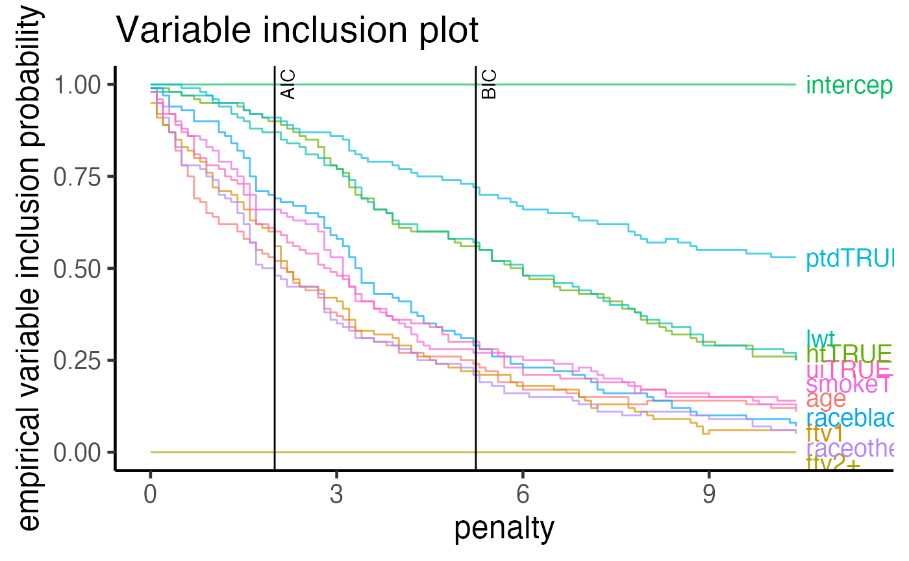
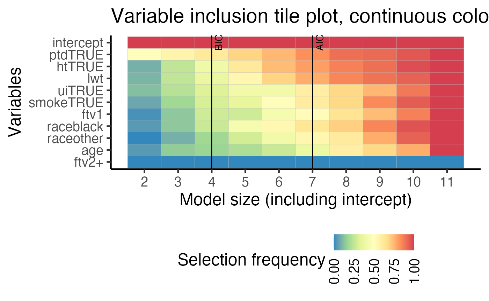
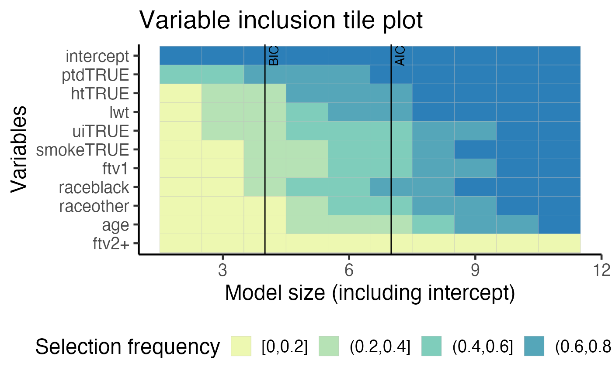

vignettes/birthweight_logit.Rmd
birthweight_logit.RmdIn this document, we will perform APES on the birthweight data from the MASS package.
There are 189 observations and 8 variables. The response variable is a binary variable indicating if an infant is in the low-weight group.
## ── Attaching packages ─────────────────────────────────────── tidyverse 1.3.0 ──## ✔ ggplot2 3.3.2 ✔ purrr 0.3.4
## ✔ tibble 3.0.3 ✔ dplyr 1.0.2
## ✔ tidyr 1.1.2 ✔ stringr 1.4.0
## ✔ readr 1.3.1 ✔ forcats 0.5.0## ── Conflicts ────────────────────────────────────────── tidyverse_conflicts() ──
## ✖ dplyr::filter() masks stats::filter()
## ✖ dplyr::lag() masks stats::lag()
## ✖ dplyr::select() masks MASS::select()theme_set( theme_classic(14) + theme(legend.position = "bottom"))
Due to the small size of this data, we will use the leaps estimator.
Since there are some factor variables, we will need to manually create the model matrix/design matrix.
## Estimate Std. Error z value Pr(>|z|)
## (Intercept) 0.82 1.24 0.66 0.51
## age -0.04 0.04 -0.96 0.34
## lwt -0.02 0.01 -2.21 0.03
## raceblack 1.19 0.54 2.22 0.03
## raceother 0.74 0.46 1.60 0.11
## smokeTRUE 0.76 0.43 1.78 0.08
## ptdTRUE 1.34 0.48 2.80 0.01
## htTRUE 1.91 0.72 2.65 0.01
## uiTRUE 0.68 0.46 1.46 0.14
## ftv1 -0.44 0.48 -0.91 0.36
## ftv2+ 0.18 0.46 0.39 0.69bwt = dplyr::mutate_if(bwt, is.factor, as.character) x = model.matrix(~0 + . - low, data = bwt)[,-3] dim(x)
## [1] 189 10y = as.integer(as.character(bwt$low)) length(y)
## [1] 189apes_result = apes(model = full_model)
In most practical cases, a single run of any variable selection procedure will not produce stable results. In order to explore stability of variable selection in this case, statistical literatures have examined the stability of variable selection using the bootstrap sampling procedure on the 189 observations. The motivation of APES is to make exhaustive selection to be fast and thus ideally suited for such a procedure
boot_result = APES::apes(full_model, n_boot = 100)
plot(boot_result, type = "vip")

plot(boot_result, type = "vip_tile")
## $apes_mle_beta_binary_plotdf
## # A tibble: 110 x 5
## variables model_name freq_selected model_size freq_selected_category
## <fct> <fct> <dbl> <int> <fct>
## 1 intercept apes_model_2 1 2 (0.8,1]
## 2 intercept apes_model_3 1 3 (0.8,1]
## 3 intercept apes_model_4 1 4 (0.8,1]
## 4 intercept apes_model_5 1 5 (0.8,1]
## 5 intercept apes_model_6 1 6 (0.8,1]
## 6 intercept apes_model_7 1 7 (0.8,1]
## 7 intercept apes_model_8 1 8 (0.8,1]
## 8 intercept apes_model_9 1 9 (0.8,1]
## 9 intercept apes_model_10 1 10 (0.8,1]
## 10 intercept apes_model_11 1 11 (0.8,1]
## # … with 100 more rows
##
## $var_tile_plot
##
## $var_tile_plot_category
## R version 4.0.2 (2020-06-22)
## Platform: x86_64-apple-darwin17.0 (64-bit)
## Running under: macOS Catalina 10.15.6
##
## Matrix products: default
## BLAS: /Library/Frameworks/R.framework/Versions/4.0/Resources/lib/libRblas.dylib
## LAPACK: /Library/Frameworks/R.framework/Versions/4.0/Resources/lib/libRlapack.dylib
##
## locale:
## [1] en_US.UTF-8/en_US.UTF-8/en_US.UTF-8/C/en_US.UTF-8/en_US.UTF-8
##
## attached base packages:
## [1] stats graphics grDevices utils datasets methods base
##
## other attached packages:
## [1] forcats_0.5.0 stringr_1.4.0 dplyr_1.0.2 purrr_0.3.4
## [5] readr_1.3.1 tidyr_1.1.2 tibble_3.0.3 ggplot2_3.3.2
## [9] tidyverse_1.3.0 MASS_7.3-51.6 APES_0.6.0
##
## loaded via a namespace (and not attached):
## [1] httr_1.4.2 jsonlite_1.7.1 splines_4.0.2
## [4] modelr_0.1.8 gtools_3.8.2 assertthat_0.2.1
## [7] blob_1.2.1 cellranger_1.1.0 yaml_2.2.1
## [10] globals_0.12.5 pillar_1.4.6 backports_1.1.9
## [13] lattice_0.20-41 glue_1.4.2 quadprog_1.5-8
## [16] digest_0.6.25 RColorBrewer_1.1-2 rvest_0.3.6
## [19] colorspace_1.4-1 htmltools_0.5.0 Matrix_1.2-18
## [22] plyr_1.8.6 pkgconfig_2.0.3 broom_0.7.0
## [25] listenv_0.8.0 haven_2.3.1 scales_1.1.1
## [28] cpp11_0.2.1 farver_2.0.3 generics_0.0.2
## [31] ellipsis_0.3.1 withr_2.2.0 furrr_0.1.0
## [34] cli_2.0.2 survival_3.1-12 magrittr_1.5
## [37] crayon_1.3.4 readxl_1.3.1 memoise_1.1.0
## [40] evaluate_0.14 fs_1.5.0 future_1.18.0
## [43] fansi_0.4.1 xml2_1.3.2 tools_4.0.2
## [46] directlabels_2020.6.17 hms_0.5.3 lifecycle_0.2.0
## [49] munsell_0.5.0 reprex_0.3.0 compiler_4.0.2
## [52] pkgdown_1.6.0.9000 systemfonts_0.3.1 rlang_0.4.7
## [55] grid_4.0.2 rstudioapi_0.11 leaps_3.1
## [58] labeling_0.3 rmarkdown_2.3 gtable_0.3.0
## [61] codetools_0.2-16 DBI_1.1.0 reshape2_1.4.4
## [64] R6_2.4.1 lubridate_1.7.9 knitr_1.29
## [67] utf8_1.1.4 rprojroot_1.3-2 ragg_0.3.1
## [70] desc_1.2.0 stringi_1.5.3 parallel_4.0.2
## [73] Rcpp_1.0.5 vctrs_0.3.4 dbplyr_1.4.4
## [76] tidyselect_1.1.0 xfun_0.17